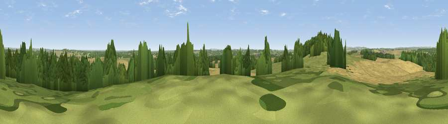

Viewpoint near Hinton Parva
#30049 in England · top 55% of its area beats it · near Hinton ParvaWhere it is
The exact computed spot (ST 96925 03125). Click the marker for map links.
The view, rendered

A 360° render of this exact spot computed from the terrain model, tree cover and land cover — summer colours, afternoon light, calibrated against photographs of famous viewpoints. Real trees, hedges and buildings will differ in detail.
The panorama
Grey silhouette: terrain skyline in each direction (720 bearings, Earth curvature and refraction included). Dashed green: skyline with trees (+15 m) and buildings (+8 m) as obstacles. Blue strip: how far the ground is visible on each bearing.
Where the view opens
Wedge length = distance to the farthest visible ground on that bearing (vegetation-aware). Rings at 10, 25 and 50 km.
What fills the view
52% cropland · 27% grassland · 21% woodland ·
Angular shares of the visible panorama (visual magnitude), not map area. Landscape diversity 0.46 (0–1 Shannon).
Key numbers
More beautiful places nearby
The staircase of upgrades: each row has a higher view potential than everything closer. Driving times are estimates from straight-line distance, calibrated against real road routing — check an actual route before setting out.
| Place | Direction | Drive | Score |
|---|---|---|---|
| Badbury Rings | WSW · 1 km | ~2 min | 53.0 |
| Viewpoint near Lytchett Matravers | S · 6 km | ~13 min | 54.1 |
| Chalbury Hill | NE · 6 km | ~13 min | 56.5 |
| Viewpoint near Corfe Mullen | S · 8 km | ~16 min | 60.9 |
| Hambledon Hill | NW · 15 km | ~27 min | 72.7 |
| Hambledon Hill | NW · 16 km | ~28 min | 74.6 |
| Viewpoint near Berwick St John | NNW · 18 km | ~31 min | 78.2 |
| Viewpoint near Harman's Cross | S · 22 km | ~36 min | 80.8 |
50.82765, -2.04503 · source: screening · position refined by local search. Computed location — check access rights before visiting.